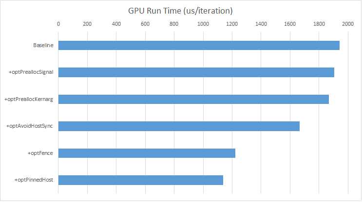

Optimizing-Dispatches¶
ROCm with Rapid Harmony : Optimizing HSA Dispatch¶
We previously looked at how to launch an OpenCL™ kernel using the HSA runtime. That example showed the basics of using the HSA Runtime. Here we’ll turn up the tempo a bit by optimizing the launch code - moving some expensive operations into the setup code (rather than on each dispatch), removing host-side synchronization, and optimizing the memory fences to the bare minimum required. We’ll measure the contributions of the different optimizations and discuss the results.The code is available at the same GitHub repository as before and the optimizations can be enabled with a series of command-line switches.
Optimizing¶
Bitonic sort involves running the same kernel several times. For the default array length of 32768, the algorithm launches 120 kernels. The original OpenCL code and the associated port used in the example synchronize with the host after each of the kernel code. To improve performance, we can submit all 120 kernels at one time, and only synchronize with the host after the last one completes. To make this change, we will need to restructure the BitonicSort::run call as follows:
- Each kernel still needs to wait for the previous kernel to finish executing. The AQL packet in the HSA system architecture defines a “barrier” bit which provides exactly this synchronization – packets with the barrier bit set will wait for all preceding kernels in the same queue to complete before beginning their own execution. Barrier-bit synchronization only works for commands in the same queue, but will be more efficient than using signals in the cases where it applies. So we’ll set the barrier bit for all the kernels to provide the required synchronization between kernels, and therefore will only need to use a completion_signal for the last kernel in the sequence. (all other kernels set the completion_signal to 0, which saves an atomic decrement operation when the command finishes. ) This optimization is marked with p_optPreallocSignal.
- In HSA, each kernel submission requires a block of “kernarg” memory to hold the kernel arguments. The baseline implementation allocates a single kernarg block and re-uses it for each kernel submission. In the optimized version, we submit all the kernels at the same time, but with different kernel arguments, so we must ensure that each kernel has its own kernarg block. The code actually performs a single kernarg allocation with enough space to cover all of the inflight kernels. Additionally, the code aligns each kernarg block on a 64-byte cache line boundary. This avoids false-sharing cases where the GPU is reading kernargs for one command while the host is writing arguments for another kernel, causing the cache line to ping-pong between CPU and GPU caches. The kernarg optimizations are marked with p_optPreallocKernarg.
- The function bitonicSortGPU_opt contains the optimized loop which submits the batch of 120 kernels to the GPU. This code is marked with o_optAvoidHostSync).
- Each AQL kernel dispatch packet contains a field that controls the memory fences applied before and after the kernel executes. In the baseline implementation, the fences conservatively specify system visibility for both acquire and release fences. (The subject of fences and what they control is well beyond the scope of this document but it covered extensively in the HSA System Architecture Specification Memory Model. It turns out we can make a more surgical use of these fences in the optimized version: (code marked with p_optFence)
- The first kernel needs a system acquire fence to make sure it gets the data from the host->device copy. The last kernel needs a system release fence to make sure it releases the data for the device->host copy. All of the intermediate kernels only need to use “agent” level fences. On the AMD Fiji hardware, agent-scope fences are significantly faster than system-scope fences since the former flush only the L1 caches while the latter flush both the L1 and the L2 caches.
// Optimize HSA Fences
if (p_optFence) {
aql.header =
(HSA_PACKET_TYPE_KERNEL_DISPATCH << HSA_PACKET_HEADER_TYPE) |
(1 << HSA_PACKET_HEADER_BARRIER);
bool setFence=false;
if (kernelCount == 1) {
// first packet needs to acquire from system to make sure it gets the host->device copy:
aql.header |= (HSA_FENCE_SCOPE_SYSTEM << HSA_PACKET_HEADER_ACQUIRE_FENCE_SCOPE);
aql.header |= (HSA_FENCE_SCOPE_AGENT << HSA_PACKET_HEADER_RELEASE_FENCE_SCOPE); setFence = true;
}
if (kernelCount == numKernels) {
// last packet needs to release to system to make sure data is visible for device->host copy:
aql.header |= (HSA_FENCE_SCOPE_AGENT << HSA_PACKET_HEADER_ACQUIRE_FENCE_SCOPE);
aql.header |= (HSA_FENCE_SCOPE_SYSTEM << HSA_PACKET_HEADER_RELEASE_FENCE_SCOPE);
setFence = true;
}
if (!setFence) {
// fences at agent scope:
aql.header |= (HSA_FENCE_SCOPE_AGENT << HSA_PACKET_HEADER_ACQUIRE_FENCE_SCOPE);
aql.header |= (HSA_FENCE_SCOPE_AGENT << HSA_PACKET_HEADER_RELEASE_FENCE_SCOPE);
}
}
* The flag p_optPinHost uses hc::am_alloc with the amPinnedHost flag to allocate pinned host memory. Pinned host memory accelerates the data transfer operations since the runtime will identify that the memory is already pinned and thus immediately start the DMA transactions - this achieves a peak transfer rate of 13-14GB/s. Unpinned memory is transferred through a host-side staging buffer and can be transferred at 6-7GB/s.
Results¶
After making these changes, we see the speedups shown in the chart and table below.
The timing numbers shown here includes the time to transfer the array to the GPU, run all of the kernels, and transfer back the result. The numbers do not include time spent initializing the runtime, allocating memory, or performing the result verification. The times show the time required to sort 32768 integers using 120 kernels. This is relatively small size to offload to the GPU (only 128K) and as a result the kernels run in 3-4 us, which stresses the HSA runtime features that we want to discuss.
| Baseline | +optPreallocSignal | +optPreallocKernarg | +optAvoidHostSync | +optFence | +optPinnedHost | |
| RunTime/Iteration (us) | 1943 | 1906 | 1869 | 1665 | 1221 | 1137 |
| Delta/Iteration(us) | -37 | -37 | -204 | -444 | -84 |
The results show that signal allocation and kernarg allocation both take approximately 37us to complete, which makes sense since both operations require a trip into kernel space (ROCK) and perform memory allocation. Even the baseline operation shares the signal and kernarg allocation for all 120 kernels but the overhead here is still significant. Kernels can be dispatched in 5-10us each, so optimal programs definitely will want to perform these operations outside of the critical path. The optimized code path here moves these operations into the setup routine. Another option is to create a buffer pool of signals and kernargs (this is the approach used by HCC) or to use thread-local-storage (if thread-safety is required).
Avoiding the host synchronization saves 204us, or about 1.7us per kernel.
The system-scope fences are fairly expensive - Fiji has a 2MB L2 cache, and it takes 3-4 us to flush the entire thing. Additionally, the bitonic kernel default size is only 128K (32K elements * 4 bytes/element) which can easily fit in the L2 cache. Each kernel in the sequence then reads from the L2 and writes the data back to it. By optimizing these fences to use AGENT scope when possible, we are able to save approximately 3.7us per kernel launch.
Finally, using pinned host memory improves the transfer speeds from around 6GB/s to 14GB/s. In this workload, we see a modest performance improvement (84us) since most of the benchmark is spent running the kernels and synchronizing between them.
Overall the performance improvement from these optimizations is 1.7X faster than the baseline version.